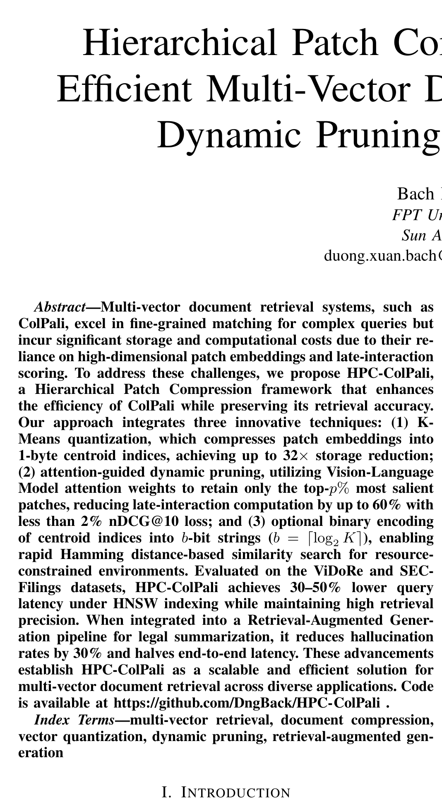

Paper Walkthrough
HPC-ColPali: compress the patches, keep the late interaction
Hierarchical Patch Compression adds three efficiency layers to ColPali: K-Means codes, attention-guided pruning, and optional binary Hamming search.
32x
storage compression with K=256 codes
60%
late-interaction compute reduction target
<2%
reported nDCG@10 drop
30%
lower hallucination rate in RAG
Based on Hierarchical Patch Compression for ColPali, Bach Duong, arXiv:2506.21601v2.
